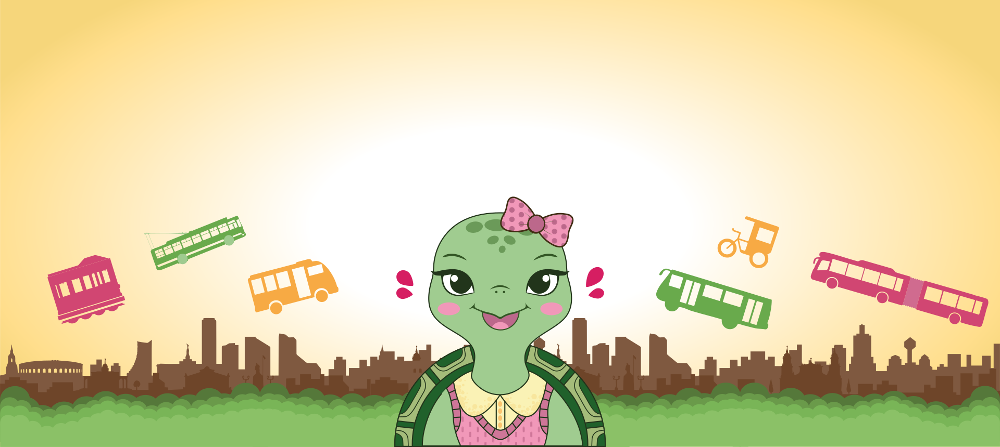
Bonnie y las 7 estaciones es un proyecto educativo que invita a niños y familias a descubrir la historia del transporte en Bogotá de una manera cercana, divertida e ilustrada. Acompaña a Bonnie en esta aventura por las calles de Bogotá y descubre cómo cada recorrido guarda un pedazo de historia.
¡Descubre más!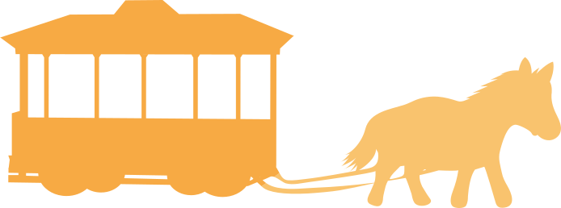
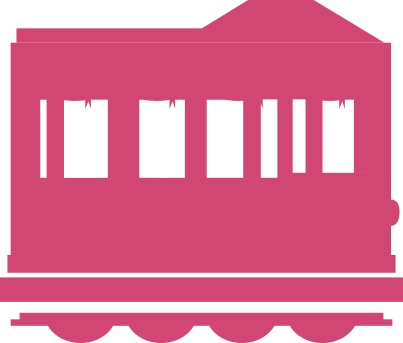
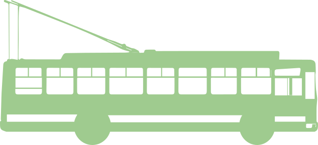
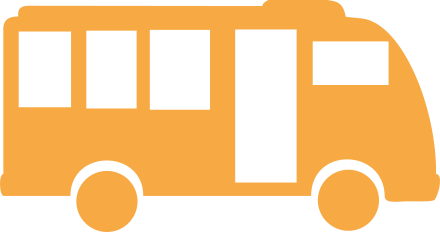
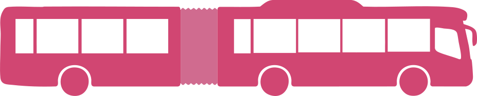
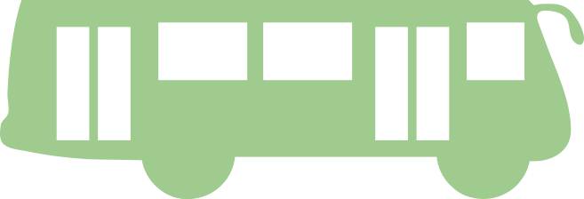
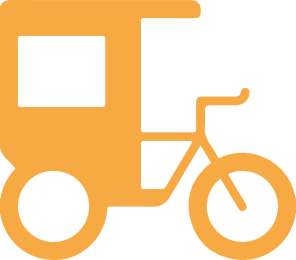
¡Conoce al personaje principal de esta maravillosa historia!
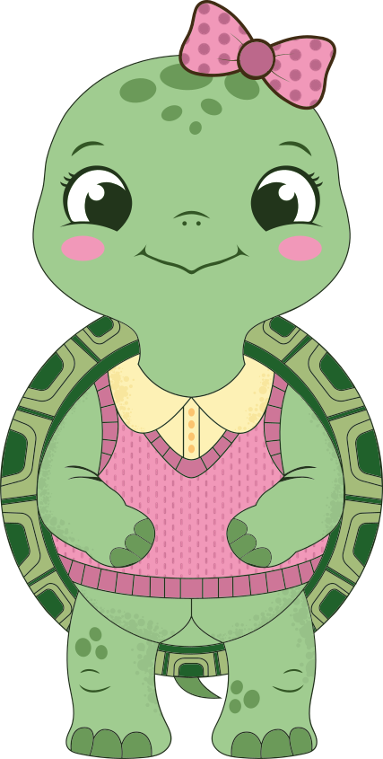
Esta pequeña y curiosa tortuga es la que le da el inicio a la gran aventura. Con su entusiasmo y energía, nos acompaña durante los dos primeros capítulos descubriendo los secretos del transporte antiguo.
(Versión principal)
En esta etapa, Bonnie ha crecido y está lista para recorrer las calles de Bogotá. Ella nos guiará a través de los grandes cambios del sistema de transporte, conectando el pasado con el presente.
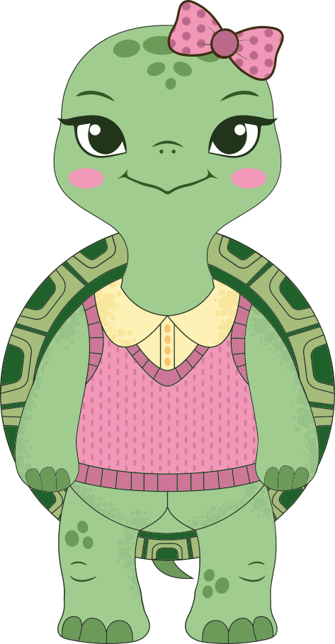
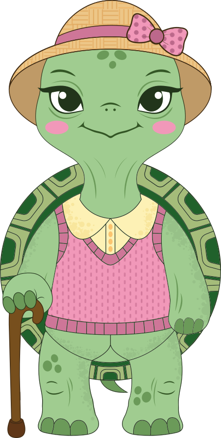
Convertida en una tortuga sabia y llena de experiencia, esta versión de Bonnie es la encargada de darle el gran cierre a nuestra historia. Con su sombrero y bastón, nos acompaña en los últimos capítulos para reflexionar sobre todo el camino recorrido y despedir esta maravillosa aventura